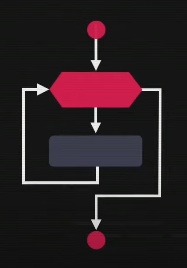
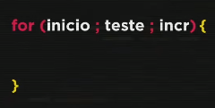
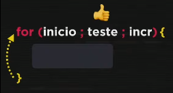
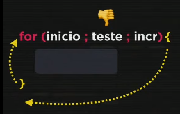
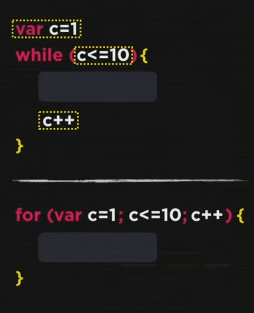

Nessa aula iremos dar continuidade nos estudos sobre repetições em JavaScript.
Estrutura de repetição com variável de controle. Basicamente nessa estrutura são feitas três coisas: inicialização, teste lógico e um incremento.
Sintaxe:
A estrutura for tem três partes: inicio, teste lógico e a incrementação. E após isso tem o bloco que vai ser executado.
Ou seja, na primeira passagem pelo for ele vai fazer a inicialização e o teste, sendo esse teste verdadeiro ele executa o bloco que está escrito (podendo ter while, do while, i f, switch) dentro desse bloco. Após executar o bloco, ele volta ao começo e enquanto está voltando, ele faz o incremento que está no final e logo após realiza o teste lógico novamente e por ai vai.
Caso o teste lógico dê falso, ele sai da estrutura e segue o código.
Iremos explicar o código for utilizando como exemplo o código while:
Testes no exercício 015